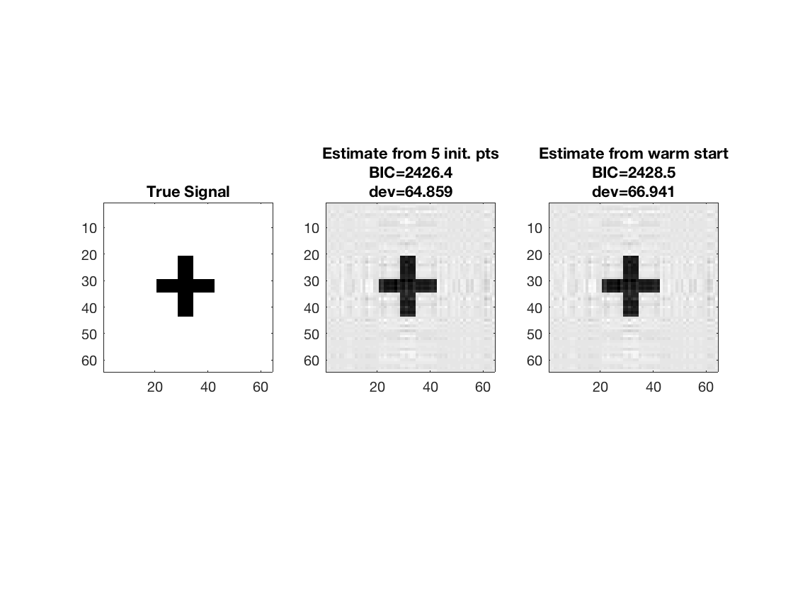
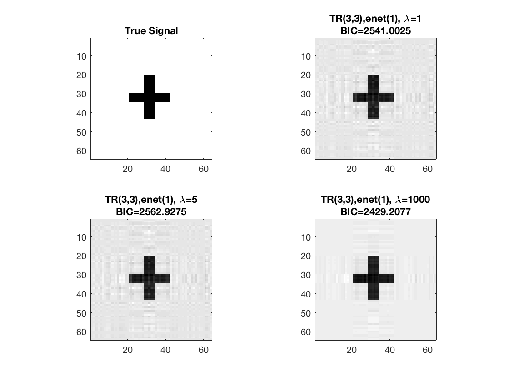
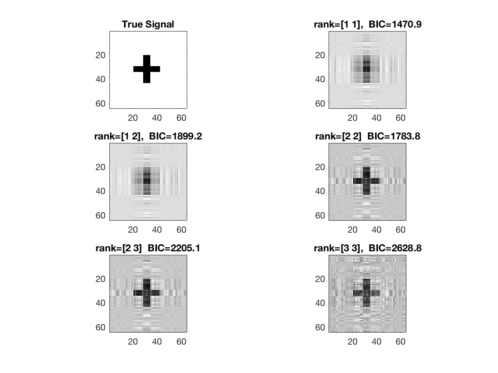
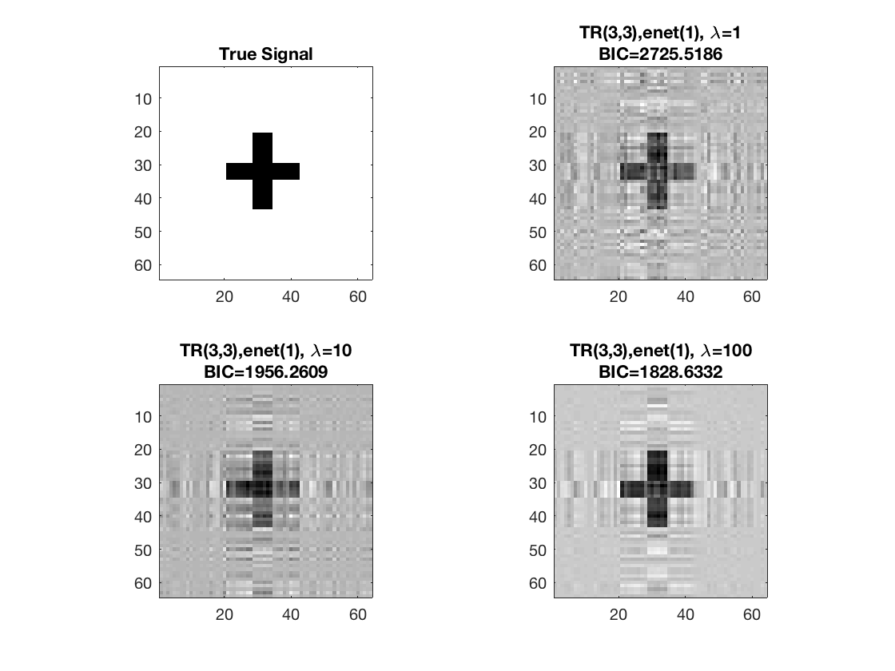
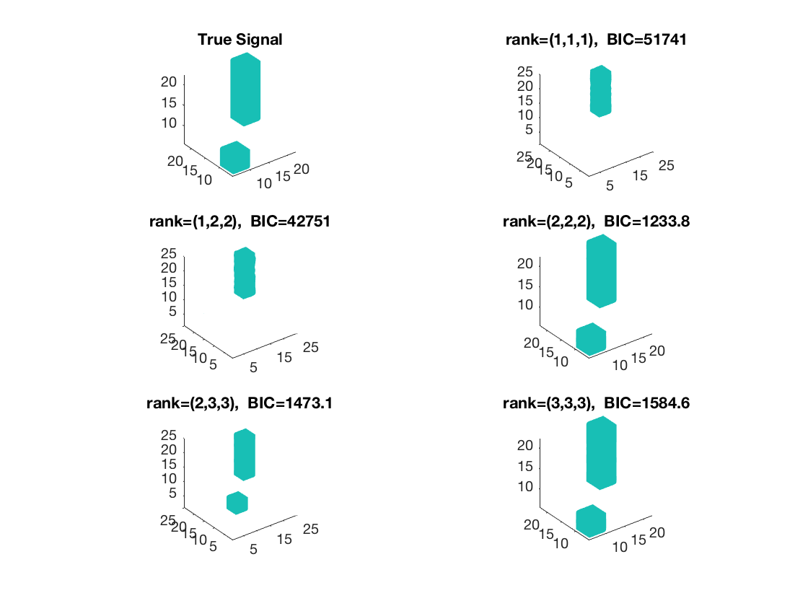
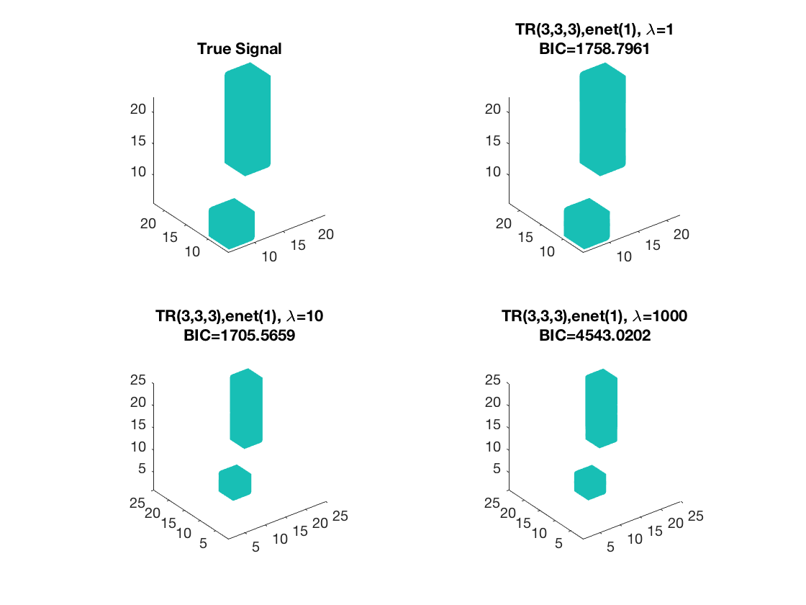

Contents
Tucker linear regression, 2D covariates
clear; % reset random seed s = RandStream('mt19937ar','Seed',2); RandStream.setGlobalStream(s);
True coefficients for regular (non-array) covariates
p0 = 5; b0 = ones(p0,1);
2D true signal: 64-by-64 cross
shape = imread('cross.gif'); shape = array_resize(shape,[32,32]); % 32-by-32 b = zeros(2*size(shape)); b((size(b,1)/4):(size(b,1)/4)+size(shape,1)-1, ... (size(b,2)/4):(size(b,2)/4)+size(shape,2)-1) = shape; [p1,p2] = size(b); disp(size(b));
64 64
Simulate covariates
n = 500; % sample size X = randn(n,p0); % n-by-p0 regular design matrix M = tensor(randn(p1,p2,n)); % p1-by-p2-by-n matrix variates disp(size(M));
64 64 500
Simulate responses
mu = X*b0 + double(ttt(tensor(b), M, 1:2));
sigma = 1; % noise level
y = mu + sigma*randn(n,1);
Estimate using Tucker linear regression - rank (1 1)
tic; disp('rank (1 1)'); [~,beta_rk1,glmstats1] = tucker_reg(X,M,y,[1 1],'normal'); toc;
rank (1 1) Elapsed time is 1.184909 seconds.
Estimate using Tucker linear regression - rank (1 2)
tic; disp('rank (1 2)'); [~,beta_rk12,glmstats12] = tucker_reg(X,M,y,[1 2],'normal'); toc;
rank (1 2) Elapsed time is 1.525358 seconds.
Estimate using Tucker linear regression - rank (2 2)
tic; disp('rank (2 2)'); [~,beta_rk2,glmstats2] = tucker_reg(X,M,y,[2 2],'normal'); toc;
rank (2 2) Elapsed time is 2.314233 seconds.
Estimate using Tucker linear regression - rank (2 3)
tic; disp('rank (2 3)'); [~,beta_rk23,glmstats23] = tucker_reg(X,M,y,[2 3],'normal'); toc;
rank (2 3) Elapsed time is 2.528255 seconds.
Estimate using Tucker linear regression - rank (3 3)
tic; disp('rank (3 3)'); [~,beta_rk3,glmstats3,dev3] = tucker_reg(X,M,y,[3 3],'normal'); toc;
rank (3 3) Elapsed time is 11.935729 seconds.
disp true and recovered signals
figure; hold on; set(gca,'FontSize',20); subplot(3,2,1); imagesc(-b); colormap(gray); title('True Signal'); axis equal; axis tight; subplot(3,2,2); imagesc(-double(beta_rk1)); colormap(gray); title({['rank=(1,1), ', ' BIC=',num2str(glmstats1{end}.BIC,5)]}); axis equal; axis tight; subplot(3,2,3); imagesc(-double(beta_rk12)); colormap(gray); title({['rank=(1,2), ', ' BIC=',num2str(glmstats12{end}.BIC,5)]}); axis equal; axis tight; subplot(3,2,4); imagesc(-double(beta_rk2)); colormap(gray); title({['rank=(2,2), ', ' BIC=',num2str(glmstats2{end}.BIC,5)]}); axis equal; axis tight; subplot(3,2,5); imagesc(-double(beta_rk23)); colormap(gray); title({['rank=(2,3), ', ' BIC=',num2str(glmstats23{end}.BIC,5)]}); axis equal; axis tight; subplot(3,2,6); imagesc(-double(beta_rk3)); colormap(gray); title({['rank=(3,3), ', ' BIC=',num2str(glmstats3{end}.BIC,5)]}); axis equal; axis tight;

Warm starting from coarsened estimate
% Reduce array covariates to smaller size and fit rank-3 model tic; M_small = array_resize(M, [16 16 size(M,3)]); [~,beta_small] = tucker_reg(X,M_small,y,3,'normal'); disp(size(beta_small));
16 16
Use coarsened estimate as initial point
[~,beta_ws,glmstats_ws,dev_ws] = tucker_reg(X,M,y,3,'normal', ... 'B0',array_resize(beta_small,[p1 p2])); toc; disp(size(beta_ws));
Elapsed time is 4.380676 seconds.
64 64
Compare estimate using warm start and previous estimate (5 random initial points)
disp([dev3 dev_ws]);
disp([glmstats3{end}.BIC glmstats_ws{end}.BIC]);
% disp true and recovered signals
figure; hold on;
set(gca,'FontSize',20);
subplot(1,3,1);
imagesc(-b);
colormap(gray);
title('True Signal');
axis equal;
axis tight;
subplot(1,3,2);
imagesc(-double(beta_rk3));
colormap(gray);
title({'Estimate from 5 init. pts'; ...
['BIC=',num2str(glmstats3{end}.BIC,5)]; ...
['dev=',num2str(dev3,5)]});
axis equal;
axis tight;
subplot(1,3,3);
imagesc(-double(beta_rk3));
colormap(gray);
title({'Estimate from warm start'; ...
['BIC=',num2str(glmstats_ws{end}.BIC,5)]; ...
['dev=',num2str(dev_ws,5)]});
axis equal;
axis tight;
64.8592 66.9409
1.0e+03 *
2.4264 2.4285
 Sparse Tucker linear regression, 2D covariates
Set lasso penalty and tuning parameter values
pentype = 'enet';
penparam = 1;
lambda = [1,5,1000];
Estimate using Tucker sparse linear regression - lambda 1 Warm start from rank 3 estimate
tic; disp(['lambda=', num2str(lambda(1))]); [~,beta_rk1,~,glmstat_rk1] = tucker_sparsereg(X,M,y,3,'normal',... lambda(1),pentype,penparam,'B0',beta_rk3); toc;
lambda=1 Elapsed time is 0.885159 seconds.
Estimate using Tucker sparse linear regression - lambda 2 Warm start from rank 3 estimate
tic; disp(['lambda=', num2str(lambda(2))]); [~,beta_rk2,~,glmstat_rk2] = tucker_sparsereg(X,M,y,3,'normal',... lambda(2),pentype,penparam,'B0',beta_rk3); toc;
lambda=5 Elapsed time is 0.790504 seconds.
Estimate using Tucker sparse linear regression - lambda 3
tic; disp(['lambda=', num2str(lambda(3))]); [~,beta_rk3,~,glmstat_rk3] = tucker_sparsereg(X,M,y,3,'normal',... lambda(3),pentype,penparam,'B0',beta_rk3); toc;
lambda=1000 Elapsed time is 0.312698 seconds.
disp true and recovered signals
figure; hold on; set(gca,'FontSize',20); subplot(2,2,1); imagesc(-b); colormap(gray); title('True Signal'); axis equal; axis tight; subplot(2,2,2); imagesc(-double(beta_rk1)); colormap(gray); title({['TR(3,3),' pentype '(' num2str(penparam), '), \lambda=', ... num2str(lambda(1))];... ['BIC=', num2str(glmstat_rk1{end}.BIC)]}); axis equal; axis tight; subplot(2,2,3); imagesc(-double(beta_rk2)); colormap(gray); title({['TR(3,3),' pentype '(' num2str(penparam), '), \lambda=', ... num2str(lambda(2))];... ['BIC=', num2str(glmstat_rk2{end}.BIC)]}); axis equal; axis tight; subplot(2,2,4); imagesc(-double(beta_rk3)); colormap(gray); title({['TR(3,3),' pentype '(' num2str(penparam), '), \lambda=', ... num2str(lambda(3))];... ['BIC=', num2str(glmstat_rk3{end}.BIC)]}); axis equal; axis tight;
Tucker logistic regression, 2D covariates
clear; % reset random seed s = RandStream('mt19937ar','Seed',2); RandStream.setGlobalStream(s);
true coefficients for regular (non-narray) covariates
p0 = 5; b0 = ones(p0,1);
2D true signal: 64-by-64 cross
shape = imread('cross.gif'); shape = array_resize(shape,[32,32]); % 32-by-32 b = zeros(2*size(shape)); b((size(b,1)/4):(size(b,1)/4)+size(shape,1)-1, ... (size(b,2)/4):(size(b,2)/4)+size(shape,2)-1) = shape; [p1,p2] = size(b); disp(size(b));
64 64
Simulate covariates
n = 1000; % sample size X = randn(n,p0); % n-by-p regular design matrix M = tensor(randn(p1,p2,n)); % p1-by-p2-by-n matrix variates disp(size(M));
64 64 1000
Simulate binary responses from the systematic components
mu = X*b0 + double(ttt(tensor(b), M, 1:2)); y = binornd(1, 1./(1+exp(-mu)));
Estimate using Tucker logistic regression - rank (1 1)
tic; disp('rank (1 1)'); [beta0_rk1,beta_rk1,glmstats1,dev1] = tucker_reg(X,M,y,[1 1],'binomial'); toc;
rank (1 1) Elapsed time is 1.596931 seconds.
Estimate using Tucker logistic regression - rank (1 2)
tic; disp('rank (1 2)'); [~,beta_rk12,glmstats12] = tucker_reg(X,M,y,[1 2],'binomial'); toc;
rank (1 2) Elapsed time is 2.121412 seconds.
Estimate using Tucker logistic regression - rank (2 2)
tic; % a rough estimate from reduced sized data M_reduce = array_resize(M, [16 16 size(M,3)]); [~,beta_rk2] = tucker_reg(X,M_reduce,y,[2 2],'binomial'); beta_rk2 = array_resize(beta_rk2, [64 64]); % warm start from coarsened estimate disp('rank (2 2)'); [~,beta_rk2,glmstats2] = tucker_reg(X,M,y,[2 2],'binomial','B0',beta_rk2); toc;
rank (2 2) Elapsed time is 2.681551 seconds.
Estimate using Tucker logistic regression - rank (2 3)
tic; disp('rank (2 3)'); % a rough estimate from reduced sized data [~,beta_rk23] = tucker_reg(X,M_reduce,y,[2 3],'binomial'); beta_rk23 = array_resize(beta_rk23, [64 64]); % warm start from coarsened estimate [~,beta_rk23,glmstats23] = tucker_reg(X,M,y,[2 3],'binomial','B0',beta_rk23); toc;
rank (2 3) Elapsed time is 3.573067 seconds.
Estimate using Tucker logistic regression - rank (3 3)
tic; disp('rank (3 3)'); % a rough estimate from reduced sized data [~,beta_rk3] = tucker_reg(X,M_reduce,y,[3 3],'binomial'); beta_rk3 = array_resize(beta_rk3, [64 64]); % warm start from coarsened estimate [~,beta_rk3,glmstats3] = tucker_reg(X,M,y,[3 3],'binomial','B0',beta_rk3); toc;
rank (3 3) Elapsed time is 8.022493 seconds.
disp true and recovered signals
figure; hold on; set(gca,'FontSize',20); subplot(3,2,1); imagesc(-b); colormap(gray); title('True Signal'); axis equal; axis tight; subplot(3,2,2); imagesc(-double(beta_rk1)); colormap(gray); title({['rank=[1 1], ', ' BIC=',num2str(glmstats1{end}.BIC,5)]}); axis equal; axis tight; subplot(3,2,3); imagesc(-double(beta_rk12)); colormap(gray); title({['rank=[1 2], ', ' BIC=',num2str(glmstats12{end}.BIC,5)]}); axis equal; axis tight; subplot(3,2,4); imagesc(-double(beta_rk2)); colormap(gray); title({['rank=[2 2] ', ' BIC=',num2str(glmstats2{end}.BIC,5)]}); axis equal; axis tight; subplot(3,2,5); imagesc(-double(beta_rk23)); colormap(gray); title({['rank=[2 3] ', ' BIC=',num2str(glmstats23{end}.BIC,5)]}); axis equal; axis tight; subplot(3,2,6); imagesc(-double(beta_rk3)); colormap(gray); title({['rank=[3 3], ', ' BIC=',num2str(glmstats3{end}.BIC,5)]}); axis equal; axis tight;
Sparse Tucker logistic regression, 2D covariates
Set lasso penalty and tuning parameter values
pentype = 'enet';
penparam = 1;
lambda = [1,10,100];
Estimate using Tucker sparse logistic regression - lambda 1 Warm start from rank 3 estimate
tic; disp(['lambda=', num2str(lambda(1))]); [~,beta_rk1,~,glmstat_rk1] = tucker_sparsereg(X,M,y,3,'binomial',... lambda(1),pentype,penparam,'B0',beta_rk3); toc;
lambda=1 Elapsed time is 1.461679 seconds.
Estimate using Tucker sparse logistic regression - lambda 2 Warm start from rank 3 estimate
tic; disp(['lambda=', num2str(lambda(2))]); [~,beta_rk2,~,glmstat_rk2] = tucker_sparsereg(X,M,y,3,'binomial',... lambda(2),pentype,penparam,'B0',beta_rk3); toc;
lambda=10 Elapsed time is 4.024404 seconds.
Estimate using Tucker sparse logistic regression - lambda 3 Warm start from rank 3 estimate
tic; disp(['lambda=', num2str(lambda(3))]); [~,beta_rk3,~,glmstat_rk3] = tucker_sparsereg(X,M,y,3,'binomial',... lambda(3),pentype,penparam,'B0',beta_rk3); toc;
lambda=100 Elapsed time is 1.478872 seconds.
disp true and recovered signals
figure; hold on; set(gca,'FontSize',20); subplot(2,2,1); imagesc(-b); colormap(gray); title('True Signal'); axis equal; axis tight; subplot(2,2,2); imagesc(-double(beta_rk1)); colormap(gray); title({['TR(3,3),' pentype '(' num2str(penparam), '), \lambda=', ... num2str(lambda(1))];... ['BIC=', num2str(glmstat_rk1{end}.BIC)]}); axis equal; axis tight; subplot(2,2,3); imagesc(-double(beta_rk2)); colormap(gray); title({['TR(3,3),' pentype '(' num2str(penparam), '), \lambda=', ... num2str(lambda(2))];... ['BIC=', num2str(glmstat_rk2{end}.BIC)]}); axis equal; axis tight; subplot(2,2,4); imagesc(-double(beta_rk3)); colormap(gray); title({['TR(3,3),' pentype '(' num2str(penparam), '), \lambda=', ... num2str(lambda(3))];... ['BIC=', num2str(glmstat_rk3{end}.BIC)]}); axis equal; axis tight;
Tucker linear regression, 3D covariates
clear; % reset random seed s = RandStream('mt19937ar','Seed',2); RandStream.setGlobalStream(s);
True coefficients for regular (non-array) covariates
p0 = 5; b0 = ones(p0,1);
True 3D signal: 25-by-25-by-25 "two-cube"
b = zeros(25,25,25); b(6:10,6:10,6:10) = 1; b(18:22,18:22,8:22) = 1; [p1, p2, p3] = size(b); disp(size(b));
25 25 25
Simulate covariates
n = 500; % sample size X = randn(n,p0); % n-by-p regular design matrix M = tensor(randn(p1,p2,p3,n)); % p1-by-p2-by-p3 3D variates % the systematic part mu = X*b0 + double(ttt(M,tensor(b),1:3)); % simulate responses sigma = 1; % noise level y = mu + sigma*randn(n,1);
Estimate by Tucker linear regression - rank (1 1 1)
tic; disp('rank (1 1 1)'); [~,beta_rk1,glmstats1] = tucker_reg(X,M,y,[1 1 1],'normal'); toc;
rank (1 1 1) Elapsed time is 2.741409 seconds.
Estimate by Tucker linear regression - rank (1 2 2)
tic; disp('rank (1 2 2)'); [~,beta_rk122,glmstats122] = tucker_reg(X,M,y,[1 2 2],'normal'); toc;
rank (1 2 2) Elapsed time is 5.222631 seconds.
Estimate by Tucker linear regression - rank (2 2 2)
tic; disp('rank (2 2 2)'); % a rough estimate from reduced sized data M_reduce = array_resize(M, [10 10 10 size(M,4)]); [~,beta_rk2] = tucker_reg(X,M_reduce,y,2,'normal'); beta_rk2 = array_resize(beta_rk2, [p1 p2 p3]); % warm start from coarsened estimate [~,beta_rk2,glmstats2] = tucker_reg(X,M,y,[2 2 2],'normal','B0',beta_rk2); toc;
rank (2 2 2) Elapsed time is 2.998746 seconds.
Estimate by Tucker linear regression - rank (2 3 3)
tic; disp('rank (2 3 3)'); % a rough estimate from reduced sized data M_reduce = array_resize(M, [10 10 10 size(M,4)]); [~,beta_rk233] = tucker_reg(X,M_reduce,y,[2 3 3],'normal'); beta_rk233 = array_resize(beta_rk233, [p1 p2 p3]); % warm start from coarsened estimate [~,beta_rk233,glmstats233] = tucker_reg(X,M,y,[2 3 3],'normal','B0',beta_rk233); toc;
rank (2 3 3) Elapsed time is 7.274027 seconds.
Estimate by Tucker linear regression - rank (3 3 3)
tic; disp('rank (3 3 3)'); % a rough estimate from reduced sized data M_reduce = array_resize(M, [10 10 10 size(M,4)]); [~,beta_rk3] = tucker_reg(X,M_reduce,y,3,'normal'); beta_rk3 = array_resize(beta_rk3, [p1 p2 p3]); % warm start from coarsened estimate [~,beta_rk3,glmstats3] = tucker_reg(X,M,y,[3 3 3],'normal','B0',beta_rk3); toc;
rank (3 3 3) Elapsed time is 6.293258 seconds.
disp true and recovered signals
figure; hold on; set(gca,'FontSize',20); subplot(3,2,1); view(3); isosurface(b,.5); xlim([1 p1]); ylim([1 p2]); zlim([1 p3]); title('True Signal'); axis equal; subplot(3,2,2); isosurface(double(beta_rk1),0.5); view(3); xlim([1 p1]); ylim([1 p2]); zlim([1 p3]); title({['rank=(1,1,1), ', ' BIC=', num2str(glmstats1{end}.BIC,5)]}); daspect(daspect); subplot(3,2,3); isosurface(double(beta_rk122),0.5); view(3); xlim([1 p1]); ylim([1 p2]); zlim([1 p3]); title({['rank=(1,2,2), ', ' BIC=', num2str(glmstats122{end}.BIC,5)]}); daspect(daspect); subplot(3,2,4); view(3); isosurface(double(beta_rk2),0.5); xlim([1 p1]); ylim([1 p2]); zlim([1 p3]); title({['rank=(2,2,2), ', ' BIC=', num2str(glmstats2{end}.BIC,5)]}); axis equal; subplot(3,2,5); isosurface(double(beta_rk233),0.5); view(3); xlim([1 p1]); ylim([1 p2]); zlim([1 p3]); title({['rank=(2,3,3), ', ' BIC=', num2str(glmstats233{end}.BIC,5)]}); daspect(daspect); subplot(3,2,6); view(3); isosurface(double(beta_rk3),0.5); xlim([1 p1]); ylim([1 p2]); zlim([1 p3]); title({['rank=(3,3,3), ', ' BIC=', num2str(glmstats3{end}.BIC,5)]}); axis equal;
Sparse Tucker linear regression, 3D covaraites,
Set lasso penalty and tuning parameter values
pentype = 'enet';
penparam = 1;
lambda = [1,10,1000];
Estimate using Tucker sparse linear regression - lambda 1 Warm start from rank 3 estimate
tic; disp(['lambda=', num2str(lambda(1))]); [~,beta_rk1,~,glmstat_rk1] = tucker_sparsereg(X,M,y,3,'normal',... lambda(1),pentype,penparam,'B0',beta_rk3); toc;
lambda=1 Elapsed time is 0.592070 seconds.
Estimate using Tucker sparse linear regression - lambda 2 Warm start from rank 3 estimate
tic; disp(['lambda=', num2str(lambda(2))]); [~,beta_rk2,~,glmstat_rk2] = tucker_sparsereg(X,M,y,3,'normal',... lambda(2),pentype,penparam,'B0',beta_rk3); toc;
lambda=10 Elapsed time is 1.423486 seconds.
Estimate using Tucker sparse linear regression - lambda 3 Warm start from rank 3 estimate
tic; disp(['lambda=', num2str(lambda(3))]); [~,beta_rk3,~,glmstat_rk3] = tucker_sparsereg(X,M,y,3,'normal',... lambda(3),pentype,penparam,'B0',beta_rk3); toc;
lambda=1000 Elapsed time is 1.087429 seconds.
disp true and recovered signals
figure; hold on; set(gca,'FontSize',20); subplot(2,2,1); view(3); isosurface(b,.5); xlim([1 p1]); ylim([1 p2]); zlim([1 p3]); title('True Signal'); axis equal; subplot(2,2,2); isosurface(double(beta_rk1),0.5); view(3); xlim([1 p1]); ylim([1 p2]); zlim([1 p3]); daspect(daspect); title({['TR(3,3,3),' pentype '(' num2str(penparam), '), \lambda=', ... num2str(lambda(1))];... ['BIC=', num2str(glmstat_rk1{end}.BIC)]}); axis equal; subplot(2,2,3); view(3); isosurface(double(beta_rk2),0.5); xlim([1 p1]); ylim([1 p2]); zlim([1 p3]); title({['TR(3,3,3),' pentype '(' num2str(penparam), '), \lambda=', ... num2str(lambda(2))];... ['BIC=', num2str(glmstat_rk2{end}.BIC)]}); daspect(daspect); subplot(2,2,4); view(3); isosurface(double(beta_rk3),0.5); xlim([1 p1]); ylim([1 p2]); zlim([1 p3]); title({['TR(3,3,3),' pentype '(' num2str(penparam), '), \lambda=', ... num2str(lambda(3))];... ['BIC=', num2str(glmstat_rk3{end}.BIC)]}); daspect(daspect);